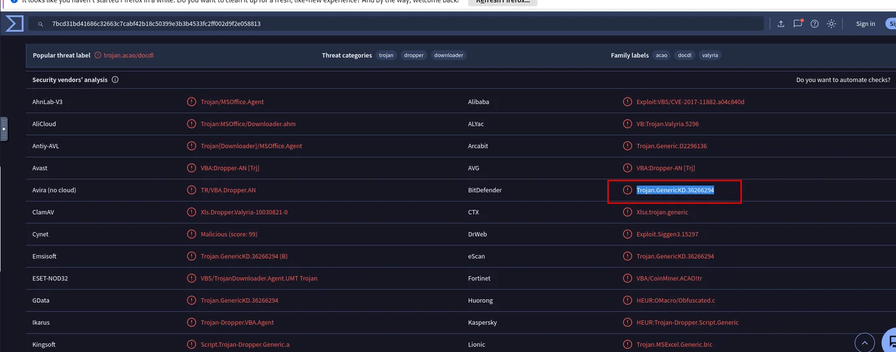
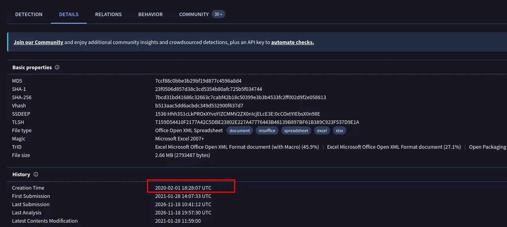
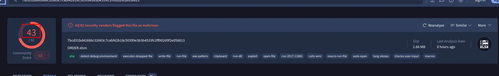
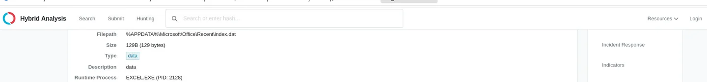
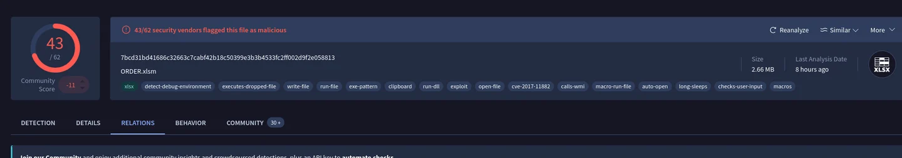
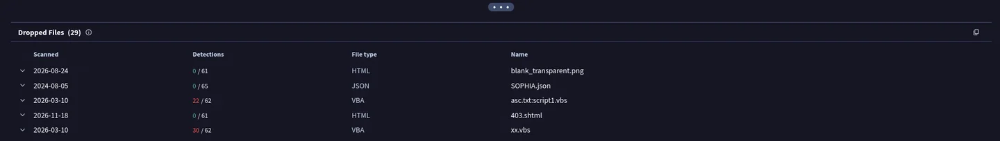

Remote Working
- Categoria
- Desafios
- Caso
- DOC-03
- Registro
- Análise de artefatos
Resumo
Investigação de um documento suspeito em um cenário simulado de trabalho remoto.
Passo a passo da investigação
Arquivo analisado
Arquivo:
/root/Desktop/ChallengeFiles/ORDER_SHEET_SPEC.zip
Análise e evidências
Extraímos o arquivo e analisamos a planilha XLSX no VirusTotal, Hybrid Analysis e ANY.RUN.
1. Nome detectado pelo Bitdefender
With what name is the file detected by Bitdefender antivirus? No VirusTotal, verificamos o nome atribuído ao malware pelo Bitdefender.

2. Data de criação do arquivo
What is the date the file was created? (UTC) Answer format: YYYY-MM-DD HH:MM:SS Nos detalhes do arquivo, verificamos a data de criação.

3. Quantidade de arquivos gravados no disco
How many files are dropped on the disk?

4. Hash SHA-256 do arquivo EMF
What is the SHA-256 hash of the dropped EMF file? Nesse caso, consultamos a análise em sandbox do Hybrid Analysis, que forneceu o seguinte resultado: 979dde2aed02f077c16ae53546c6df9eed40e8386d6db6fc36aee9f966d2cb82

5. Indicador observado no tráfego
A seção Relations do VirusTotal mostrou comunicação externa associada ao artefato.

6. Confirmação da quantidade de arquivos
How many files are dropped on the disk? Na seção “Relations” do VirusTotal, confirmamos essa informação.

Exercício simulado. Algumas capturas foram recortadas ou tiveram campos ocultados.